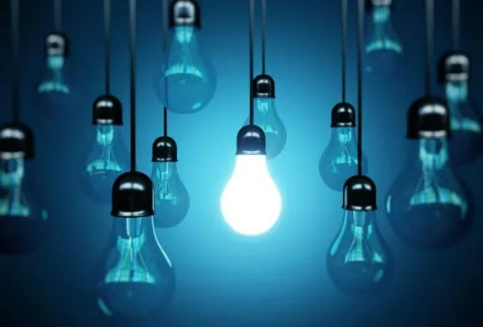

SCHNEIDER ELETRIC BRASIL
H2O
O ato diário de tomar um banho é um luxo moderno que muitas vezes não consideramos de forma completa.
Enquanto a água escorre pelo chuveiro, poucos de nós param para refletir sobre o impacto ambiental desse gesto aparentemente inofensivo.
Tomar banho é uma atividade que, em média, consome uma quantidade significativa de água. Um chuveiro padrão libera cerca de 9 a 10 litros de água por minuto. Se considerarmos um banho médio de 10 a 15 minutos, estamos falando de 90 a 150 litros de água sendo utilizados em um único banho. Esses números podem variar com base na pressão da água, no tipo de chuveiro e nos hábitos individuais.
O uso excessivo de água durante o banho pode levar à escassez de recursos hídricos.
Imagine o quanto 5 minutos no chuveiro pode impactar nossas vidas, isso equivale a dois galões cheios de 20 litros cada um!

Este deperdício de água impacta as comunidades que não tem acesso a água potável, que muitas vezes precisam sair de suas casas e percorrer longas horas para buscar esta água!
Pequenas Mudanças, Grandes Resultados:
No ritmo frenético de nossas vidas modernas, é fácil deixar passar despercebido o impacto ambiental das atividades mais simples. Tomar um banho, por exemplo, é um ato de relaxamento que muitas vezes não associamos a questões ambientais. No entanto, a conscientização sobre o consumo de água no chuveiro pode resultar em mudanças positivas surpreendentes.
Uma abordagem consciente em relação ao tempo gasto no chuveiro pode ter um impacto considerável. Reduzir o tempo de banho, mesmo que seja apenas de alguns minutos, pode acumular economias significativas de água ao longo do tempo. Isso não apenas preserva um recurso essencial, mas também ajuda a diminuir a pegada hídrica de nossas atividades diárias.
Além disso, a escolha de instalações mais eficientes pode ter um efeito notável. A instalação de redutores de vazão ou chuveiros de baixo fluxo é uma maneira simples e prática de economizar água, sem sacrificar a qualidade do banho. Esses pequenos ajustes demonstram como a inovação pode desempenhar um papel fundamental na promoção de práticas mais sustentáveis.

Uma sugestão criativa para economizar água é coletar a água fria que sai inicialmente do chuveiro enquanto espera que ela esquente. Essa água aparentemente desperdiçada pode ser reaproveitada para tarefas domésticas, como regar plantas ou limpar superfícies. Essa prática simples exemplifica como pequenos atos podem ter um impacto mais amplo.
Em última análise, cada ação consciente conta. As mudanças que fazemos em nossos hábitos diários, como tomar banhos mais curtos, usar instalações eficientes e ajustar a temperatura da água, contribuem para um futuro mais sustentável. Ao adotar essas práticas, não apenas estamos preservando recursos valiosos, mas também estamos cultivando uma mentalidade de respeito pela natureza. O caminho para um planeta mais saudável começa em nossas próprias casas, um chuveiro de cada vez.
Luz
A luz é uma parte indispensável da nossa vida cotidiana, mas muitas vezes não percebemos o quanto seu uso impacta nosso consumo de energia e o meio ambiente. Neste texto, exploraremos o gasto de luz em nossas casas, destacando como pequenas escolhas conscientes podem fazer uma grande diferença na redução do consumo energético e na preservação dos recursos naturais.
Quando acendemos uma lâmpada em nossa casa, raramente consideramos a jornada da energia elétrica que torna isso possível. A eletricidade é gerada em usinas, muitas das quais dependem de fontes não renováveis, como carvão, petróleo e gás natural. O processo de geração, transmissão e distribuição dessa energia consome recursos naturais e emite gases de efeito estufa, contribuindo para as mudanças climáticas.
Pequenas mudanças em nossos comportamentos diários podem ter um efeito positivo. Optar por aparelhos e eletrônicos eficientes em termos de energia, desligar dispositivos quando não estão em uso e usar iluminação apenas quando necessário são maneiras de reduzir nosso consumo de energia. Além disso, o uso de energias renováveis, como a solar e eólica, pode contribuir para a mitigação dos impactos ambientais.
Ao adotar práticas mais conscientes em relação ao consumo de energia elétrica, estamos contribuindo para a preservação do meio ambiente e para a sustentabilidade do nosso planeta. Cada ação individual conta, e juntos podemos criar um impacto significativo para um futuro mais limpo e saudável.
Economizando seu bolso
Buscar maneiras de economizar no orçamento doméstico é uma atitude inteligente e responsável, e uma das áreas onde podemos fazer isso é reduzindo os gastos com água e energia elétrica.
Além de aliviar a pressão financeira, essa abordagem também contribui para um estilo de vida mais sustentável, ajudando a preservar nossos recursos naturais e reduzir a pegada de carbono.
Entre em contato também através das nossas redes sociais!
![]()
![]()